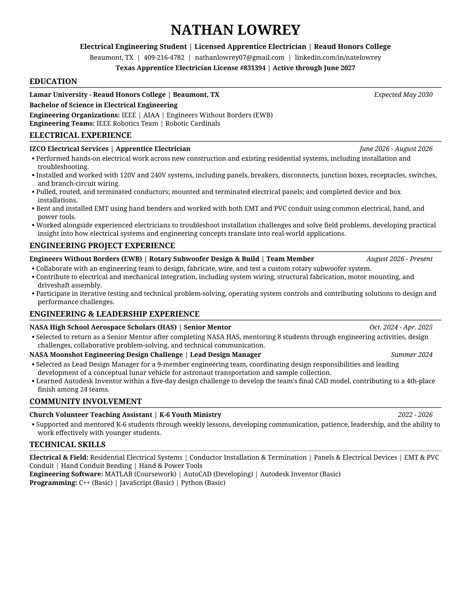

NATHAN LOWREY / ENGINEERING PORTFOLIO
Resume & Contact.
Electrical Engineering student at Lamar University and licensed apprentice electrician, with hands-on electrical experience, engineering projects, and leadership experience.
01 / RESUME
Experience at a glance.
Explore my education, engineering projects, electrical field experience, technical skills, and leadership background in the full resume below.

PDF · One page · Updated October 2026
02 / CONTACT
Let's connect.
I'm always interested in connecting with engineers, industry professionals, and others who enjoy learning, building, and solving challenging problems.